RISC-V 机器语言
约 2007 个字 6 行代码 15 张图片 预计阅读时间 7 分钟
1. 冯诺依曼架构
冯诺依曼架构：程序的指令和数据一起存储在内存中，可以被读取、写入．这使得计算机可以快速重新编程而不需要进行硬件接线．
- 由于均存储在内存中，因此所有东西（指令与数据）都是可寻址的；专门有一个寄存器指向程序执行的指令（Program Counter）．
- 程序以二进制形式发布，使得其有二进制兼容性：旧程序（二进制文件）可以直接在支持该指令集的新机器上运行．
2. 指令编码格式
RISC-V的所有指令都和数据一样被设计为固定的32位．为了实现不同功能，将这32位划分成了不同的字段，并定义了六种基本格式：R、I、S、B、U、J．
由于共有32个寄存器，因此表示寄存器至少需要5bit宽．
2.1 R格式
R格式用于算数与逻辑操作的指令．
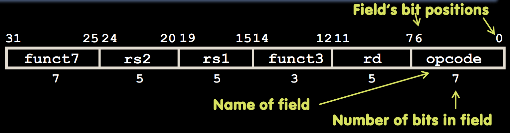
字段划分：funct7 (7位)、rs2 (5位)、rs1 (5位)、funct3 (3位)、rd (5位)、opcode (7位)．
rs1、rs2、rd均为5位，分别表示三个操作寄存器．opcode代表当前指令是什么格式；对于R格式而言，均为0110011．funct7与funct3和opcode共同决定了要执行的操作．操作对应关系如下图所示：
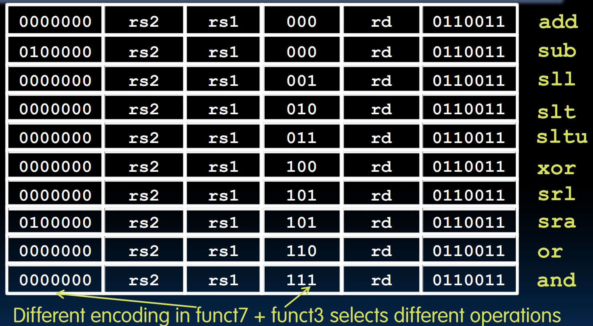
比之前多了两种操作：
slt表示set less than，指令为slt rd, rs1, rs2，表示如果rs1 < rs2就将rd设为1．sltu为无符号比较版本．
2.2 I格式
I格式用于与立即数Immediate有关的指令．
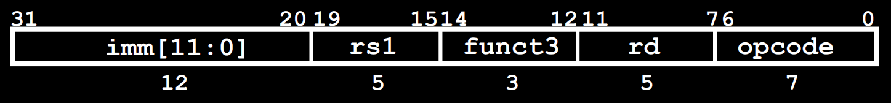
- 由于
addi指令中rs2没有被用到，我们将其与funct7合并为12位用来表示立即数．其覆盖范围为 \([-2048, 2047]\)（由于其要与rs1中32位的数进行操作，操作前需要符号扩展到32位）． - I格式的
opcode为0010011．
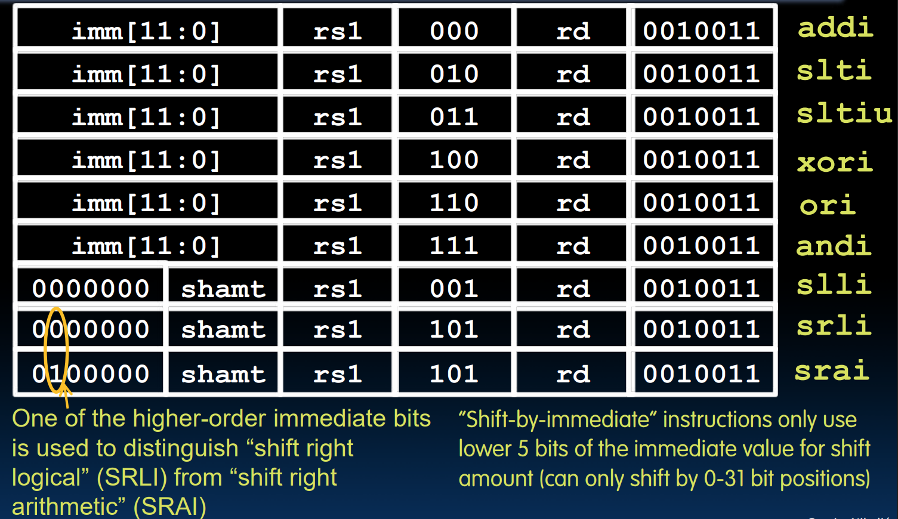
由于一个寄存器只有32位，移动超过31位的值没有意义，因此移位操作的字段划分仍然类似R指令，其中 rs2 为移位数，第30位用于区分逻辑/算数右移．
与R指令比较，同样的指令对应的 funct3 代码其实也是相同的．
由于load word指令的格式与立即数计算几乎一样（rs1 表示 base、rd 表示 dest、立即数表示偏移量），因此load指令也是一种特殊的I格式，其 opcode 为000011．
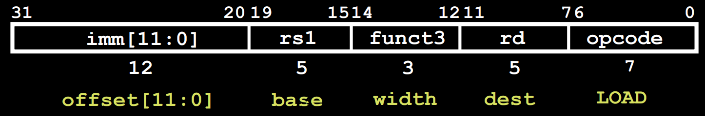
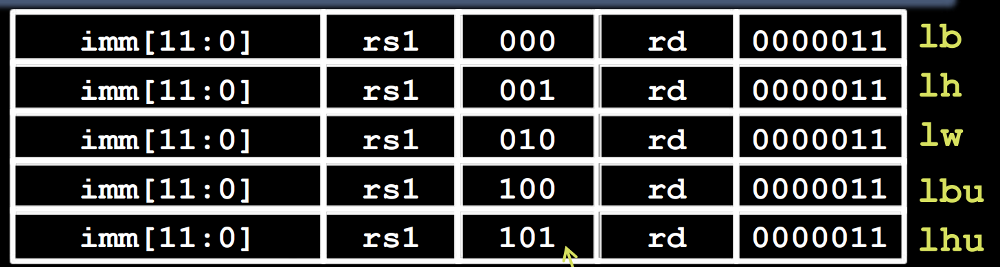
lh为load halfword，即一次读取半字/16字节．
lb和lh都是符号位拓展，将终点寄存器的其他位用二进制数的最高位填充；lbu和lhu对应无符号形式，其他位均为0填充．
2.3 S格式
S格式用于存储（store）指令．虽然它的操作数也是两个寄存器，但其中一个寄存器是存储源，另一寄存器用于寻址，这两个都不属于 rd 类寄存器，因此其与读取指令不同．rs1 表示 base，rs2 表示 src；而用于表示偏移量的立即数被截成两段（funct7 的7位与原 rd 的5位），仍然看作整体12位表示立即数．
S格式的 opcode 为0100011．
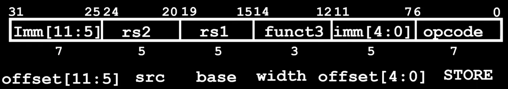
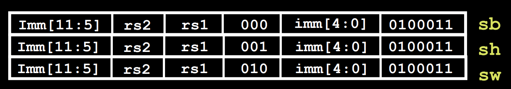
2.4 B格式
B格式用于分支（branches）指令．分支指令常用于if、while、for这类，分支的部分一般来说比较短，对于跳跃距离比较长的需要用J格式．其会根据汇编代码中的 label 与 PC 的相对距离，自动计算出需要的偏移量．
PC相对寻址：给定的立即数（补码形式），即可根据当前PC指向地址与该立即数寻址．这在跳转类指令中很常见．这样做的好处是：用相对地址可表达的有用范围更大（绝对地址的范围很多都浪费），并且当整个代码段进行偏移时，只要两个跳转的命令之间没有新增代码，就不需要改动．
由于每一个指令是一个字即4字节长，理论上来说我们可以使用 PC = PC + 4 * imm 来实现；但RISC-V还有一个16位指令的变体，为了向后兼容，RISC-V的跳转均使用 PC = PC + 2 *imm．也就是说，不妨设我们要跳转的字节数为 x，则 x 一定为偶数，而我们要写的立即数 imm = x / 2．也就是说实际上我们可以用12位来实现跳转13位的效果（类似浮点数省略1）．
最后的效果：12位立即数，但是可以补0实现13位，表达的字节范围为 \([-2^{12},2^{12}-2]\) 字节（因为为偶数），即 \([-1024,1023]\) 字．
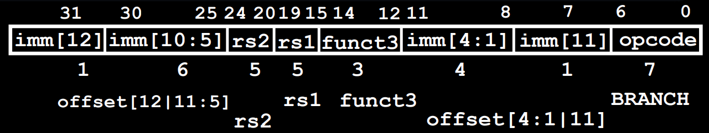
B格式与S格式类似，都是两个寄存器 rs1 与 rs2，代表进行比较的两个寄存器．不同点是立即数没有第0位（因为为偶数，后补零），而原来第0位被第11位占据，第11位被第12位占据．这么做的好处是与S指令在最大程度上保持一致，增加硬件的性能．
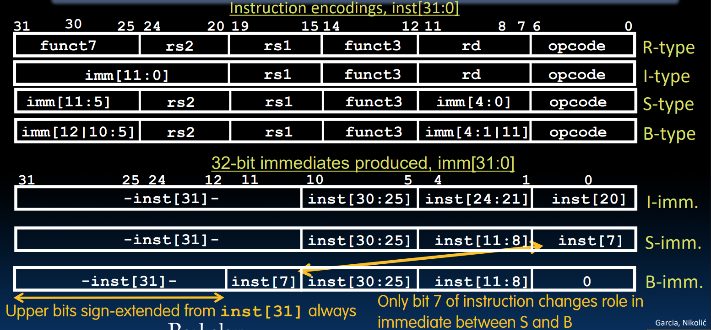
可以看到，这么做的好处就是只需把（相对整个寄存器的）第七位（原来的最低位）移动到最高位并进行符号位扩展即可．
B格式的 opcode 为1100011．
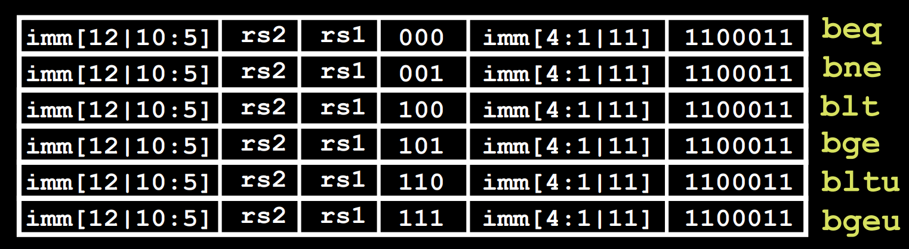
2.5 U格式
如果我们想跳转到 \(2^{10}\) 字以外的指令处呢？实际上，jar 类指令可以跳得更远．在B格式无法跳到的地方，编译器会自动用 jar 类指令：
beq x10, x0, far
next instr
# 其等效为
bne x10, x0, next
j far
next: next instr
实际上，jar 类指令使用了类似U格式才能实现跳的更远．U格式是用于加载大立即数的指令．其提供了长达20位的立即数字段，以及一个目标寄存器 rd．U格式本身的指令有两个：lui 与 auipc．
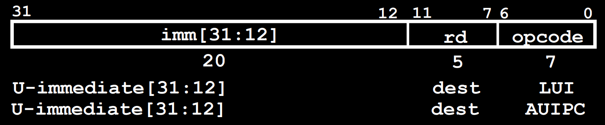
lui 可以将20位大立即数加载到目标寄存器的高20位上．这样再配合 addi 将小立即数加载到低12位上，我们就可以分两次把一个32位数字加载到一个寄存器上了．~~（lui音似louis，而法国曾经有一个louis也是被分成了两……）~~
例如：
lui x10, 0x87654 # x10 = 0x87654000
addi x10, x10, 0x321 # x10 = 0x87654321
特殊情况：当低12位的最高位为1时，其会对高20位进行符号扩展将他们全加上1，高20位全1相当于 -1．因此此时得到的结果在第12位会少1．解决办法是使用 lui 时手动加上1．例如想要加载数字 0xdeadbeef：
# 错误：
lui x10, 0xdeadb # x10 = 0xdeadb000
addi x10, x10, 0xeef # x10 = 0xdeadaeef
#正确：
lui x10, 0xdeadc # x10 = 0xdeadc000
addi x10, x10, 0xeef # x10 = 0xdeadbeef
不过编译器已经帮我们解决了这个问题，使用伪指令 li x10, 0xdeadbeaf（这个可以用来加载任意32位补码）即可．
auipc 会把20位大立即数扩展为32位（后补0）与PC相加，同时将和加载到目标寄存器上．注意这个过程不改变PC本身的值．
区别
lui 是直接覆盖目标寄存器的高20位；auipc 是将20位扩展为32位后与PC相加，并覆盖目标寄存器的值．
且 lui 和 auipc 虽然均为U格式，但有不同的opcode；前者为0110111，后者为0010111．
2.6 J格式
J格式用于跳转指令，其跳转范围因为使用了20位（由于可以省略最后的0，实际上是21位）大立即数，因此可以寻址到 \(\pm 2^{18}\) 个字．jal rd, label 将当前的 PC + 4 存入 rd 中，跳转到 PC + offset 的指令位置（offset 由 label 与PC的相对距离算出）．
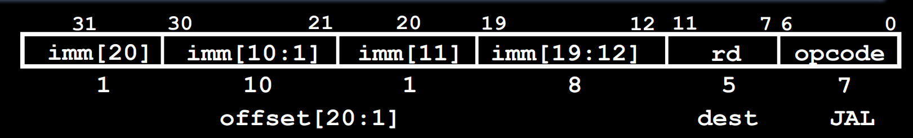
跳转指令还有一个 jalr rd, rs, imm，但其格式属于I指令，因为格式完全相同：
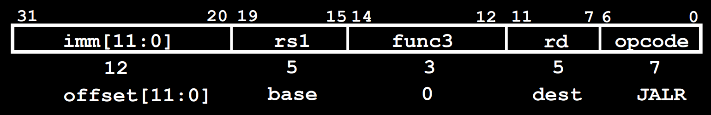
其负责将 PC + 4 存入 rd 中，然后将令 PC = rs + imm 从而跳转．
# ret and jr psuedo-instructions
ret = jr ra = jalr x0, ra, 0
# Call function at any 32-bit absolute address
lui x1, <hi20bits>
jalr ra, x1, <lo12bits>
# Jump PC-relative with 32-bit offset
auipc x1, <hi20bits>
jalr x0, x1, <lo12bits>
注意
由于 jalr 使用的是I格式，因此它在计算跳转距离时没有补0的乘2范围．
3. 总结
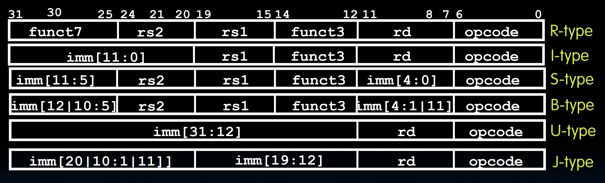